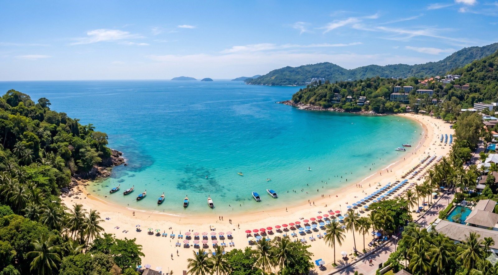

Surin Beach Guide: The Natural Elegance of Phuket
Surin Beach: Phuket's Natural Chic
Surin Beach has undergone a dramatic transformation over the last decade. Once the center of Phuket’s trendy beach club scene, it has since been returned to its natural state following a government-led clearance of illegal structures. Today, it is arguably more beautiful than ever—a wide stretch of pristine sand backed by tall palms and casuarina trees, offering a sense of "old-school" Phuket with a modern, sophisticated edge.
Often referred to as "Millionaire’s Row" because of the ultra-exclusive villas perched on the surrounding hills, Surin remains one of the most elegant destinations on the island.
Once you've cleared customs, you'll need to choose an airport transfer to reach your hotel.
1. The Beach and Water
Surin is famous for the quality of its water. During the high season (December to April), it is often as clear as a swimming pool, showing off shades of turquoise and deep blue that are simply breathtaking.
The Sand
The sand at Surin is incredibly soft and white. Because the beach clubs were removed, the beach now feels spacious and natural. While there are still some sunbeds and umbrellas for rent in designated areas, much of the beach is open and undeveloped.
Snorkeling
The rocky headlands at both ends of the beach offer some of the best shore-snorkeling on the west coast. You can find a surprising variety of tropical fish just a few meters from the shore.
2. The Experience: Beach Picnics and Street Food
One of the unique things about Surin today is the thriving street food scene that has replaced the permanent restaurants. Behind the beach, a long row of vendors sets up every day, offering a fantastic array of affordable Thai food.
- Beach Picnics: It has become a local tradition to buy various dishes—grilled chicken, spicy salads, fresh fruit, and iced coffees—and have a picnic under the shade of the trees. It’s a wonderful, low-key way to enjoy the beach.
- The Vibe: The atmosphere is sophisticated but relaxed. You’ll see a mix of high-end resort guests and locals enjoying the same beautiful setting.
3. Beyond the Beach: Shopping and Dining
While the beach itself is natural, the area immediately behind it offers some of the most stylish shopping and dining in Phuket.
The Plaza Surin
A boutique shopping mall that houses high-end art galleries, home decor stores, and luxury fashion boutiques. It’s a great place to wander if you’re looking for a unique souvenir or a piece of Thai art.
Fine Dining
- Oriental Spoon: Located at the Twinpalms resort, this is one of the most famous restaurants in the area, known for its stylish interior and excellent fusion cuisine.
- Beachfront Dining: Several high-end hotels, such as The Surin, offer beachfront dining experiences for their guests and outside visitors.
4. Where to Stay
- Ultra-Exclusive: Amanpuri is one of the most famous resorts in the world and is located on the northern headland of Surin. The Surin (formerly Pansea) also shares this exclusive bay.
- Modern Style: Twinpalms Phuket is just a two-minute walk from the beach and offers a chic, minimalist aesthetic and a legendary Sunday brunch.
- Villas: The hills surrounding Surin are home to some of the most expensive and beautiful private villas in Southeast Asia, many of which are available for short-term holiday rentals.
5. Practical Tips
- Accessibility: Surin is easy to find and has a large parking area, which makes it a popular stop for people driving along the coastal road.
- Sunset: Because it faces west, the sunsets here are spectacular. It’s a much quieter alternative to the more famous sunset spots in the south.
- Pansea Beach: The small beach to the north of Surin is Pansea Beach. While it is public by law, the only land access is through the Amanpuri or The Surin resorts, making it feel like a private paradise.
Conclusion
Surin Beach is a testament to the fact that sometimes, less is more. By removing the clutter of the past, the island has rediscovered one of its most beautiful assets. If you appreciate clear water, natural shade, and a touch of sophistication, Surin is likely to be your favorite beach in Phuket.
Insights provided by the long-time residents and experts at Phuket 101.